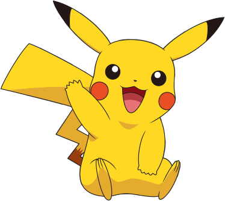

| Captain N | |
|---|---|
| Captain N: The Game Master... Like it or hate it, this show made waves for being bad in many people's eyes, but also very good to some. The initial idea is a kid playing his NES and he gets sucked into a Video Game - When he traveled into the video game world, he became his own cartoon and helped save the denizens of Video Land. The show was rather short-lived, but made waves nonetheless. But back in the day, it was really cool to see some of our favorite video game characters in a cartoon, even if they weren't accurate representations. Captain N was an original character who traveled into the world of video games to try and save a princess from the evil Mother Brain (who happens to arguably be the main antagonist in the Metroid series). So the ups, and downs of this character is the inaccurate representations, but the impressive imagination it took really helped make this more interesting. |
|
| Ridley | |
 |
The other main antagonist of the Metroid series. He's an alien dragon of sorts that leads the Space Pirates in their conquest of the galaxy. He was in the original Metroid game and returned to Super Metroid. Ridley has been a staple of the series ever since. Samus however would love to get that bounty on Ridley's rather large head. He's come back in various forms over time, such as the dreaded Mecha-Ridley from the Metroid Prime series. His trademark roar gets long-time fans pumped for the upcoming battle. |
| Banjo and kazooie | |
|
What can I say? These two are inseperable and make such a good team that they might as well be one character. Banjo is a happy-go-lucky bear in a magical world. His partner is a rather sarcastic bird that he loves like a sister (that's right, Kazooie is a girl!). Kazooie typically rests in Bajo's backpack and can fly him around and help him make powerful jumps, as well as laying and spitting eggs at enemies. In the first game they set off to rescue Banjo's little sister Tooty from the clutches of the evil Gruntilda the witch (who likes to speak in rhyme, for some reason), who seeks to Tooty's youth from her and keep it for herself so she doesn't look so gross anymore (should you get a game over, you'll see the surprisingly pleasant results). |
|
| Ness |
The main character of the first Earthbound game (technically the second in the Mother series). Ironically it didn't really make waves when it hit the shores, but the series developed a mass cult fanbase that sprung this series into stardom. Ness uses psychic powers to use magic in the RPG he's featured in. Some time later, he surprisingly made an appearance in Super Smash Brothers, and the fanbase continued to grow from there. Ness continues to be a playable character in the Super Smash Brothers series. |
| Gamecube |
Everybody's favorite pink little puffball. His first game was on the original Gameboy, entitled Kirby's Dreamland. It was an instant hit and he became a prominent enough character to make it to Super Smash Brothers, but not before getting his own regular console games. Kirby is known for the ability to suck enemies up and take their abilities. This grants him with weapons sometimes, or even the ability to turn into one, such as the Kirby Wheel. The Kriby franchise is still alive and well today but has mostly gone back to it's roots as a portable series, which is neither good nor bad. He continues to be one of the most powerful contenders in the Super Smash Brothers series, able to take and use anybody's abilities. |
| Samus |
This would be everybody's favorite space bounty-hunter (unless you're a Star Wars fan as well, then I guess that statement would be fairly conflicting haha). Regardless, she's known not for only being such a badass, but the fact that well...she's a she! When the first Metroid game came out, nobody had a clue, as even the instruction manual referred to Samus as being a male. When people started beating the game in under a certain time, the world was shocked. Samus was revealed to be a woman and under her suit, a rather revealing swimsuit. Samus quickly rose to fame, as did the Metroid series in general. She has a ton of tricks up her sleeve, such as rolling into a ball to get into tight areas, arming her arm-cannon with powerful weapons, and fighting off the evil space pirates, or more recently, the Phazon infestation. Samus has been around a long time and Metroid: Other M looks fantastic as well, returning partly to the original style of play. |
| Pikachu |  |
What would this list be without the diminutive electric mouse? Arguably one of the cutest Nintendo characters ever, he packs a powerful punch behind that cute face. His name literally means "electric mouse". That being said, Pikachu's special ability is using the power of electricity to decimate Ash's enemies. He's one of Nintendo's most popular characters and the franchise continues to be immensely popular to this day. He even had his own game on the Nintendo 64, called "Hey you, Pikachu!". The game utilized a microphone that could be attached to the Nintendo 64 controller, though it was rather buggy, to say the least. Also, following the success of the popular Pokemon cartoon, a new game was released called "Pokemon: Yellow Version" that played out a little more like the TV show. Pikachu became your mandatory starting Pokemon and wouldn't hang out in a Pokeball, as he hated it in there, and you'd even run into Jessie and James from team Rocket. Pikachu is the face of Pokemon and has raked in millions, if not billions for Nintendo. |
| Donkey Kong |
Originally Mario's arch nemesis, Donkey Kong is a rather large gorilla that used to like to capture the Princess and carry her off, ala King Kong. What happened with this character is rather unique. Not only did Mario become popular enough to get his own game series, but Donkey Kong did as well, starting with the smash hit Donkey Kong Country. He loves bananas and the evil crocodile king, King K. Rool loves to steal them for himself. Donkey Kong must often go on a long journey to defeat King K. Rool and get his special banana stash back. You'd think he'd hide his bananas in a better place. While popular, he's almost faded into obscurity now. Though Donkey Kong Country Returns just might change that. |
| Link |
Nintendo's surprisingly popular elven warrior. He resides in the mystical land of Hyrule under several different honorary titles of in-game legend, such as "The Hero" and "The Hero of Time". He holds in his spirit the Triforce of Courage, one part of the all-powerful Triforce, which grants anyone who gathers all three pieces any one wish they desire. The evil king Ganon holds the Triforce of Power, and Princess Zelda holds the Triforce of Wisdom. Ganon often kidnaps Princess Zelda in an attempt to steal her Triforce and lure Link in with her to capture his as well, and throw the world into eternal darkness. Link isn't about to let that happen though, and sets off on a series of quests that take him through time and space to defeat Ganon and rescue Zelda. |
| Mario |  |
Super Mario Bros.:The man himself, the man who needs no introduction. Making his first appearance in the highly popular arcade game "Donkey Kong" as "Jumpman", Mario brought us out of another video game crash with Super Mario Bros., his first full-length video game. He is perhaps even the most iconic video game character of all. Aside from video games, he's spawned a movie (yep, the movie exists, it cannot be denied!), a few cartoon series, comics, toys, and the list just goes on. He's recognized from his signature cap with an "M" in the middle, his blue overalls, red shirt, mustache, and white gloves. He's known for his ability to jump extremely high, particularly while running, and the ability to shoot fire from his hands after eating a fire flower, as well as getting taller when eating a mushroom. He jumps on his enemies to defeat them and is on a neverending quest to send Bowser back to where he came from and save Princess Peach, so that he may feast on the delicious cake she made for him. The series is still running strong today. |